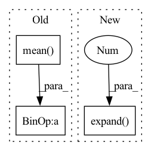

Pattern ID :1847

Before Change
dim = shape[-1]
x = x.view(-1, dim)
x_mean = x.mean(dim = 1, keepdim= True)
x_var = x.var(dim = 1, unbiased = False, keepdim = True)
scaled_x = (x - x_mean)
sqrt_var = (x_var + eps) ** 0.5
inv_var = 1. / sqrt_var
normed_x = scaled_x * inv_var
ctx.save_for_backward(scaled_x, normed_x, gamma, sqrt_var, inv_var)
After Change
n_rows, n_cols = x.shape
expanded_gamma = gamma[None, :].expand(n_rows, -1)
expanded_beta = beta[None, :].expand(n_rows, -1)
BLOCK_SIZE = triton.next_power_of_2(n_cols)
num_warps = calc_num_warps(BLOCK_SIZE)
In pattern: SUPERPATTERN
Frequency: 3
Non-data size: 3
Instances
Fragment ID: 8351647
Project Name: lucidrains/triton-transformer
Commit Name: c4a68c1023e8ad92b8f2beeb5a5d5c78fb2cda34
Time: 2021-09-22
Author: lucidrains@gmail.com
File Name: triton_transformer/triton_transformer.py
M Class Name: _layernorm
N Class Name: _layernorm
M Method Name: forward(6)
N Method Name: forward(6)
M Parent Class: autograd.Function
N Parent Class: autograd.Function
M File Name: triton_transformer/triton_transformer.py
N File Name: triton_transformer/triton_transformer.py
M Start Line: 265
M End Line: 277
N Start Line: 337
N End Line: 370
'>
Before Change
stats = {}
if stage != "train":
predictions = predictions.squeeze(2)
loss = -predictions.max(dim=-1)[0].sum(dim=-1).mean()
seq = ctc_greedy_decode(predictions, lens, blank_id=params.blank_id)
phns = undo_padding(phns, phn_lens)
stats["PER"] = wer_details_for_batch(ids, phns, seq)
After Change
ids, phns, phn_lens = targets
if stage != "train":
pout = predictions.squeeze(2)
predictions = predictions.expand(-1, -1, phns.shape[1] + 1, -1)
loss = params.compute_cost(
predictions,
phns.to(params.device).long(),
'>
Fragment ID: 8351643
Project Name: speechbrain/speechbrain
Commit Name: 7b2a912879ed4372f56df73657c4fe7e8f6eacb5
Time: 2020-06-05
Author: a.heba@irit.fr
File Name: recipes/minimal_examples/neural_networks/ASR_Transducer/example_asr_transducer_experiment.py
M Class Name: TransducerBrain
N Class Name: TransducerBrain
M Method Name: compute_objectives(4)
N Method Name: compute_objectives(4)
M Parent Class: sb.core.Brain
N Parent Class: sb.core.Brain
M File Name: recipes/minimal_examples/neural_networks/ASR_Transducer/example_asr_transducer_experiment.py
N File Name: recipes/minimal_examples/neural_networks/ASR_Transducer/example_asr_transducer_experiment.py
M Start Line: 72
M End Line: 84
N Start Line: 72
N End Line: 85
'>
Before Change
stats = {}
if stage != "train":
predictions = predictions.squeeze(2)
loss = -predictions.max(dim=-1)[0].sum(dim=-1).mean()
ind2lab = params.train_loader.label_dict["phn"]["index2lab"]
sequence = ctc_greedy_decode(
predictions, lens, blank_id=params.blank_index
)
After Change
ids, phns, phn_lens = targets
if stage != "train":
pout = predictions.squeeze(2)
predictions = predictions.expand(-1, -1, phns.shape[1] + 1, -1)
loss = params.compute_cost(
predictions,
phns.to(params.device).long(),
'>
Fragment ID: 8351640
Project Name: speechbrain/speechbrain
Commit Name: 7b2a912879ed4372f56df73657c4fe7e8f6eacb5
Time: 2020-06-05
Author: a.heba@irit.fr
File Name: recipes/TIMIT/ASR_Transducer/experiment.py
M Class Name: ASR
N Class Name: ASR
M Method Name: compute_objectives(4)
N Method Name: compute_objectives(4)
M Parent Class: sb.core.Brain
N Parent Class: sb.core.Brain
M File Name: recipes/TIMIT/ASR_Transducer/experiment.py
N File Name: recipes/TIMIT/ASR_Transducer/experiment.py
M Start Line: 84
M End Line: 98
N Start Line: 84
N End Line: 99